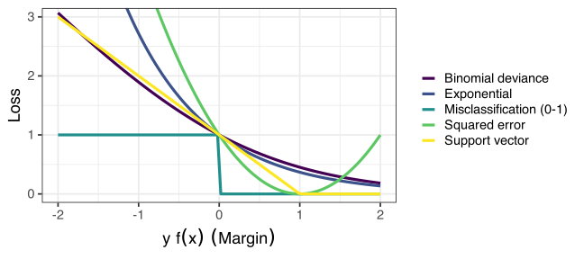

Set \(f_m(x) = f_{m-1}(x) + \beta_m G(x,\ \theta_m)\)
Final classifier is \(G(x, \theta_M) = \textrm{sign}\left( f_M(x) \right)\)
Here, \(L\) is a loss function that measures prediction accuracy
If (1)\(L(y,\ f(x))= \exp(-y f(x))\), (2)\(G\) is a classifier, and WLOG \(y \in \{-1, 1\}\)
FSAM is equivalent to AdaBoost. Proven 5 years later (Friedman, Hastie, and Tibshirani 2000).
So what?
It turns out that “exponential loss” \(L(y,\ f(x))= \exp(-y f(x))\) is not very robust.
Here are some other loss functions for 2-class classification

Want losses which penalize negative margin, but not positive margins.
Robust means don’t over-penalize large negatives
Gradient boosting
In the forward stagewise algorithm, we solved a minimization and then made an update:
\[f_m(x) = f_{m-1}(x) + \beta_m G(x, \theta_m)\]
For most loss functions \(L\) / procedures \(G\) this optimization is difficult: \[\argmin_{\beta, \theta} \sum_{i=1}^n L\left(y_i,\ f_{m-1}(x_i) + \beta G(x_i, \theta)\right)\]
💡 Just take one gradient step toward the minimum 💡
Gradient boosting goes only part of the way toward the minimum at each \(m\).
This has two advantages:
Since we’re not fitting \(\beta, \theta\) to the data as “hard”, the learner is weaker.
This procedure is computationally much simpler.
Simpler because we only require the gradient at one value, don’t have to fully optimize.
Gradient boosting – Algorithm 🛠️
Set initial predictor \(f_0(x)=\overline{\y}\)
Until we quit ( \(m<M\) iterations )
Compute pseudo-residuals (what is the gradient of \(L(y,f)=(y-f(x))^2\)?) \[r_i = -\frac{\partial L(y_i,f(x_i))}{\partial f(x_i)}\bigg|_{f(x_i)=f_{m-1}(x_i)}\]
Estimate weak learner, \(G(x, \theta_m)\), with the training set \(\{r_i, x_i\}\).
Set \(f_m(x) = f_{m-1}(x) + \gamma_m G(x, \theta_m)\)
Final predictor is \(f_M(x)\).
Gradient boosting modifications
grad_boost <-gbm(mobile ~ ., data = train_boost, n.trees =500, distribution ="bernoulli")
Typically done with “small” trees, not stumps because of the gradient. You can specify the size. Usually 4-8 terminal nodes is recommended (more gives more interactions between predictors)
Usually modify the gradient step to \(f_m(x) = f_{m-1}(x) + \gamma_m \alpha G(x,\theta_m)\) with \(0<\alpha<1\). Helps to keep from fitting too hard.
Often combined with Bagging so that each step is fit using a bootstrap resample of the data. Gives us out-of-bag options.